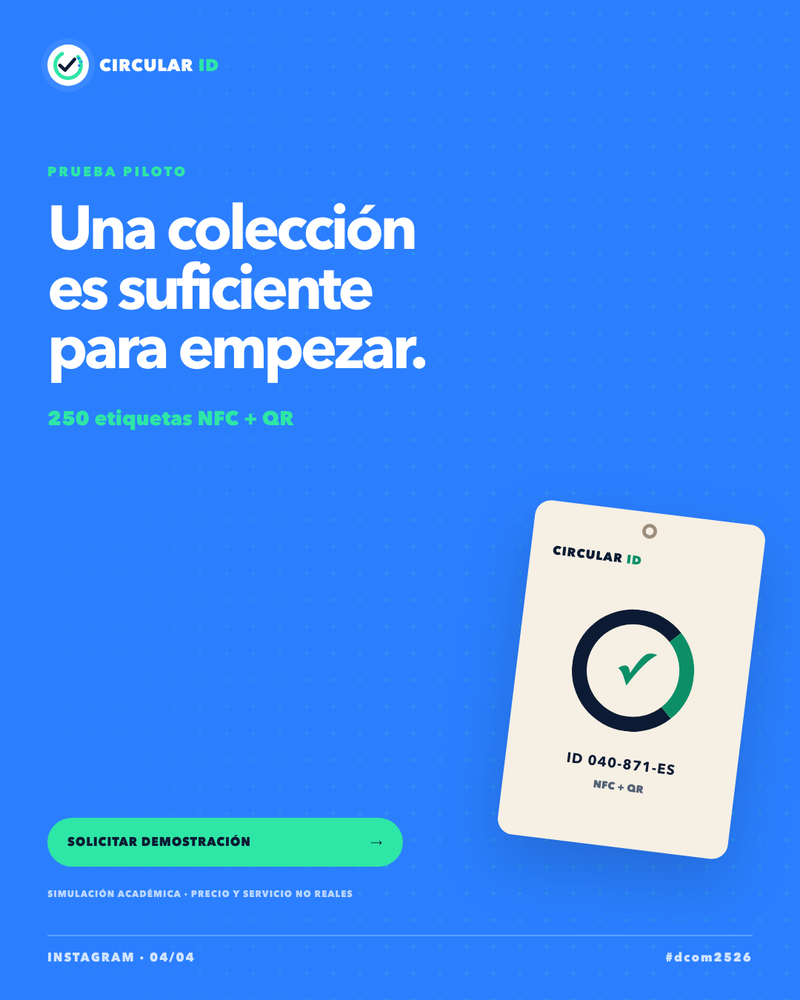

CIRCULAR ID
CIRCULAR IDPerfil de Instagram preparado para publicación
Los contenidos, la biografía y el avatar pueden trasladarse a una cuenta real.
circularid_es
4 publicaciones0 seguidores0 seguidos
Circular ID | Verifica tu moda
Cada prenda, una prueba de confianza.
NFC + QR para comprobar, cuidar y revender.
Proyecto académico · #dcom2526
✓Cómo funciona
?Guías
IDProyecto
▦ PUBLICACIONES▣ REELS♙ ETIQUETAS

▶
▣
ESPACIO PARA
FUTURA PUBLICACIÓN
FUTURA PUBLICACIÓN
ESPACIO PARA
FUTURA PUBLICACIÓN
FUTURA PUBLICACIÓN